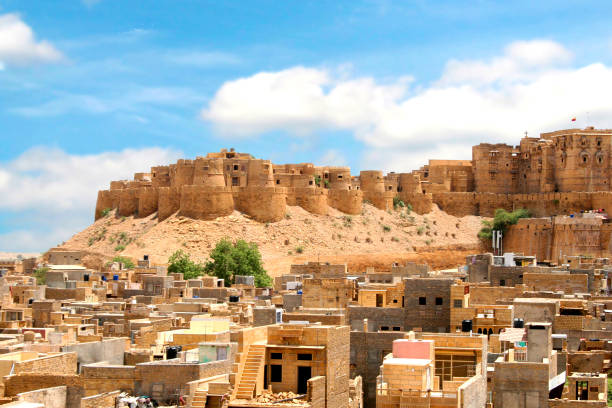
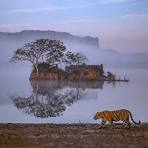
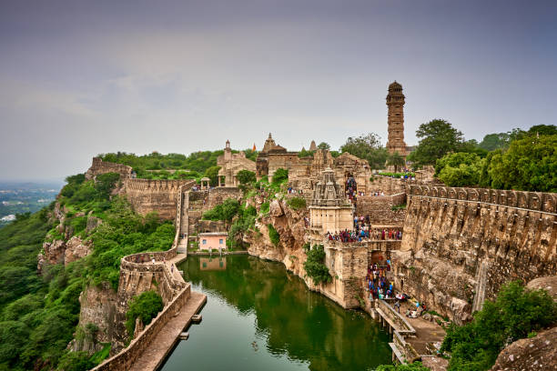
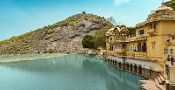
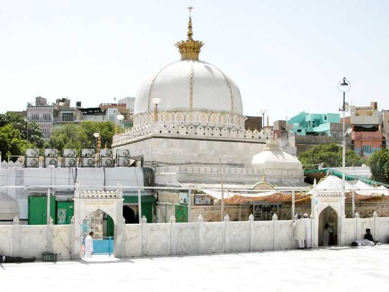

Jaipur - The Pink City
1. Amber Fort:
A majestic fort located on a hilltop, Amber Fort is renowned for its impressive architecture, intricate carvings, and stunning views of the surrounding landscape. Visitors can explore its palaces, courtyards, and gardens.2. Hawa Mahal:
Also known as the "Palace of Winds," Hawa Mahal is an iconic structure in Jaipur with its distinctive honeycomb façade. Built in 1799, it was designed to allow royal ladies to observe street festivals while remaining unseen.3. City Palace:
A magnificent palace complex in the heart of Jaipur, City Palace showcases a blend of Rajput, Mughal, and European architectural styles. It houses museums, galleries, courtyards, and gardens, offering insights into Jaipur's royal heritage.4. Jantar Mantar:
An astronomical observatory built in the 18th century by Maharaja Jai Singh II, Jantar Mantar features a collection of architectural instruments for measuring time, predicting eclipses, and tracking celestial bodies. It is a UNESCO World Heritage Site.5. Nahargarh Fort:
Perched on the Aravalli Hills, Nahargarh Fort offers panoramic views of Jaipur city. It was originally built as a defensive fort and later served as a retreat for the royals. The fort's architecture and scenic location make it a popular tourist attraction.6. Jaigarh Fort:
Located on the Cheel ka Teela (Hill of Eagles), Jaigarh Fort is renowned for its massive walls, cannon foundry, and the world's largest cannon on wheels, Jaivana. The fort offers commanding views of the surrounding landscape.7. Albert Hall Museum:
Situated in Ram Niwas Garden, Albert Hall Museum is the oldest museum in Rajasthan. It houses a vast collection of artifacts, including paintings, sculptures, carpets, and metal objects, representing the rich cultural heritage of the region.8. Jal Mahal:
Situated in the middle of Man Sagar Lake, Jal Mahal is an architectural marvel known for its location and serene surroundings. Although entry to the palace is restricted, visitors can enjoy its beauty from a distance.9. Birla Mandir:
Also known as the Laxmi Narayan Temple, Birla Mandir is a modern Hindu temple built of white marble. Dedicated to Lord Vishnu and Goddess Lakshmi, it is renowned for its intricate carvings and architectural elegance.10. Galta Ji (Monkey Temple):
Located amidst the Aravalli Hills, Galta Ji is a complex of temples and natural water springs. It is inhabited by a large troop of monkeys and offers a serene environment for meditation and spiritual contemplation.

Jaisalmer - The Golden City
1. Jaisalmer Fort:
Built in the 12th century, Jaisalmer Fort is a UNESCO World Heritage Site and one of the largest fully preserved fortified cities in the world. It stands atop Trikuta Hill and is characterized by its yellow sandstone walls and intricate architecture.2. Patwon ki Haveli:
A cluster of five havelis, Patwon ki Haveli is one of the largest and most elaborate haveli complexes in Jaisalmer. It was built by the wealthy Patwa family in the 19th century and is renowned for its ornate carvings, balconies, and frescoes.3. Sam Sand Dunes:
Located about 40 kilometers from Jaisalmer city, Sam Sand Dunes are renowned for their sweeping vistas of the Thar Desert and thrilling camel safaris. Visitors can enjoy camel rides, desert camping, and cultural performances under the starlit sky.4. Gadisar Lake:
An artificial lake surrounded by temples, ghats, and chhatris, Gadisar Lake is a tranquil oasis in the heart of Jaisalmer. Visitors can enjoy boat rides, birdwatching, and picnics by the lakeside.5. Jain Temples:
Situated within the Jaisalmer Fort complex, the Jain Temples are a group of exquisitely carved temples dedicated to Jain Tirthankaras. The temples date back to the 12th and 15th centuries and are renowned for their intricate marble sculptures and architectural beauty.6. Kuldhara Ghost Village:
Located about 18 kilometers from Jaisalmer city, Kuldhara is an abandoned village steeped in mystery and folklore. Legend has it that the village was abandoned overnight by its residents due to a curse, and it remains uninhabited to this day.7. Desert National Park:
Spread over an area of 3,000 square kilometers, Desert National Park is a haven for wildlife enthusiasts and birdwatchers. It is home to diverse flora and fauna, including desert foxes, blackbucks, great Indian bustards, and migratory birds.8. Bada Bagh:
Literally translating to "Big Garden," Bada Bagh is a historical site famous for its cenotaphs (chhatris) of the royal family of Jaisalmer. The cenotaphs are adorned with intricate carvings and offer panoramic views of the surrounding desert landscape.9. Tanot Mata Temple:
Located near the India-Pakistan border, Tanot Mata Temple is a revered shrine dedicated to Goddess Tanot, believed to be a protector of the region. The temple gained prominence during the Indo-Pak wars of 1965 and 1971 when it miraculously withstood enemy attacks.10. Jaisalmer War Museum:
Dedicated to the Indian Army's contribution during the Indo-Pak wars, the Jaisalmer War Museum showcases a collection of war memorabilia, weapons, tanks, and aircraft. It provides insights into the military history and sacrifices of the Indian armed forces.
Udaipur - The City of Lakes
1. City Palace:
One of the most iconic landmarks of Udaipur, the City Palace is a majestic complex of palaces, courtyards, gardens, and museums. It offers panoramic views of Lake Pichola and the surrounding hills.2. Lake Pichola:
A picturesque artificial lake in the heart of Udaipur, Lake Pichola is surrounded by hills, palaces, temples, and ghats. Visitors can enjoy boat rides on the lake to admire the scenic beauty and architectural splendor.3. Jag Mandir:
Located on an island in Lake Pichola, Jag Mandir is a beautiful palace built in the 17th century. It features intricate architecture, marble pavilions, and landscaped gardens. The palace is often used for weddings, events, and cultural performances.4. Jagdish Temple:
Dedicated to Lord Vishnu, Jagdish Temple is a stunning example of Indo-Aryan architecture. It is adorned with intricate carvings, sculptures, and a towering spire (shikhara). The temple is a popular pilgrimage site and a symbol of Udaipur's rich cultural heritage.5. Saheliyon ki Bari:
Also known as the Garden of Maidens, Saheliyon ki Bari is a beautiful garden adorned with fountains, marble pavilions, and lush greenery. It was built in the 18th century as a recreational space for the royal ladies and their attendants.6. Fateh Sagar Lake:
Another scenic lake in Udaipur, Fateh Sagar Lake is surrounded by hills and offers breathtaking views of the city. Visitors can enjoy boat rides, leisurely walks along the promenade, and stunning sunset views.7. Sajjangarh Palace (Monsoon Palace):
Perched atop a hill overlooking Udaipur, Sajjangarh Palace is a majestic structure built by Maharana Sajjan Singh in the 19th century. It offers panoramic views of the city and surrounding countryside and is a popular spot for sunset photography.8. Shilpgram:
A rural arts and crafts complex located on the outskirts of Udaipur, Shilpgram showcases traditional Rajasthani architecture, handicrafts, and cultural performances. Visitors can explore artisan workshops, buy handmade crafts, and learn about rural life in Rajasthan.9. Bagore ki Haveli:
An ancient haveli converted into a museum, Bagore ki Haveli displays a rich collection of artifacts, costumes, paintings, and folk art. It also hosts cultural shows featuring traditional Rajasthani music, dance, and puppetry.10. Vintage Car Museum:
Located within the premises of the City Palace, the Vintage Car Museum houses a remarkable collection of classic cars, including Rolls Royce, Cadillac, and Mercedes-Benz, belonging to the erstwhile rulers of Udaipur. Visitors can admire these vintage beauties and learn about the history of automobiles in Rajasthan.
Pushkar - The Holy City
1. Pushkar Lake:
A sacred lake in Pushkar, believed to have been created by Lord Brahma, according to Hindu mythology. It is surrounded by ghats where pilgrims perform rituals and take holy dips. The lake is considered one of the most sacred pilgrimage sites for Hindus.2. Brahma Temple:
Dedicated to Lord Brahma, the creator of the universe according to Hindu mythology, this temple is one of the few temples in the world dedicated to Brahma. It is an important pilgrimage site and attracts devotees from all over the world.3. Savitri Temple:
Perched on a hill overlooking Pushkar Lake, Savitri Temple is dedicated to Goddess Savitri, the wife of Lord Brahma. The temple offers panoramic views of Pushkar town and the surrounding desert landscape.4. Pushkar Camel Fair Grounds:
Every year, Pushkar hosts one of the largest camel fairs in the world, attracting thousands of traders, tourists, and camel herders. The fairgrounds come alive with colorful festivities, camel races, cultural performances, and traditional markets.5. Varaha Temple:
Located near Pushkar Lake, Varaha Temple is dedicated to Lord Varaha, the boar incarnation of Lord Vishnu. The temple is known for its intricate carvings and architectural beauty.6. Rangji Temple:
A prominent temple in Pushkar, Rangji Temple is dedicated to Lord Rangji, an incarnation of Lord Vishnu. It features a unique blend of South Indian and Rajput architectural styles, with a towering gopuram (gateway tower) and intricately carved pillars.7. Man Mahal:
Built by Raja Man Singh I of Amber, Man Mahal is a beautiful palace located on the eastern banks of Pushkar Lake. It has now been converted into a heritage hotel and offers stunning views of the lake and surrounding hills.8. Pushkar Bazaar:
A bustling market near Pushkar Lake, Pushkar Bazaar is known for its vibrant atmosphere and diverse range of goods. Visitors can shop for traditional Rajasthani handicrafts, clothing, jewelry, souvenirs, and local snacks.9. Aptaeshwar Temple:
Dedicated to Lord Shiva, Aptaeshwar Temple is an ancient temple located in a cave near Pushkar Lake. It is believed to be one of the oldest temples in Pushkar and attracts devotees seeking blessings and spiritual solace.10. Pap Mochani Temple:
Located on the banks of Pushkar Lake, Pap Mochani Temple is dedicated to Goddess Gayatri. It is believed that taking a dip in the holy waters of Pushkar Lake near this temple can wash away one's sins (pap), hence the name Pap Mochani.

Ranthambore National Park
1. Ranthambore Fort:
A UNESCO World Heritage Site, Ranthambore Fort is located within the national park. It stands atop a hill and offers panoramic views of the surrounding landscape. The fort dates back to the 10th century and houses ancient temples, palaces, and reservoirs.2. Padam Talao:
Padam Talao is the largest lake in Ranthambore National Park and is famous for its picturesque beauty. It is a popular spot for wildlife sightings, especially during the dry season when animals gather around the lake to quench their thirst.3. Rajbagh Talao:
Another prominent lake in the national park, Rajbagh Talao is known for its scenic charm and abundant wildlife. It is an ideal location for birdwatching and photography, with a variety of avian species found in the vicinity.4. Malik Talao:
Malik Talao is a small lake within Ranthambore National Park known for its tranquil surroundings and diverse birdlife. It provides a serene setting for wildlife enthusiasts and nature lovers to enjoy the beauty of the park.5. Kachida Valley:
Kachida Valley is a rugged terrain located in the western part of Ranthambore National Park. It is characterized by rocky outcrops, dense vegetation, and seasonal streams. The valley is home to a variety of wildlife including leopards, sloth bears, and deer.6. Jogi Mahal:
Jogi Mahal is a historic hunting lodge situated near the entrance of Ranthambore National Park. Built in the 18th century, it serves as a popular resting place for visitors and offers breathtaking views of the surrounding wilderness.7. Bakaula:
Bakaula is a scenic area within Ranthambore National Park known for its dense forests and diverse wildlife. It is an important habitat for tigers and provides excellent opportunities for tiger sightings during safaris.8. Rajiv Gandhi Regional Museum of Natural History:
Located near the entrance of Ranthambore National Park, this museum showcases the rich biodiversity of the region through interactive exhibits, dioramas, and audio-visual presentations. It provides valuable insights into the flora, fauna, and ecology of Ranthambore.9. Ranthambore School of Art:
Founded by renowned wildlife artist Shri Ajay Jain, the Ranthambore School of Art is dedicated to promoting wildlife conservation through art. Visitors can explore the gallery and admire the exquisite wildlife paintings and sculptures created by local artists.10. Surwal Lake:
Surwal Lake is located on the outskirts of Ranthambore National Park and is known for its scenic beauty and rich birdlife. It is a popular destination for birdwatchers and nature enthusiasts, with a variety of migratory and resident bird species found in the area.
Bikaner - The Camel Country
1. Junagarh Fort:
One of the most impressive forts in Rajasthan, Junagarh Fort was built in the 16th century by Raja Rai Singh. It boasts a blend of Rajput, Mughal, and Gujarati architectural styles and houses several palaces, temples, and pavilions within its complex.2. Lalgarh Palace:
Constructed in the early 20th century, Lalgarh Palace is an architectural marvel showcasing Indo-Saracenic style. It was built by Maharaja Ganga Singh in memory of his father, Maharaja Lal Singh. Today, a part of the palace has been converted into a luxury hotel, while other sections house a museum displaying artifacts and royal belongings.3. Karni Mata Temple (Rat Temple):
Located in Deshnoke, about 30 kilometers from Bikaner, Karni Mata Temple is famous for its unique inhabitants - thousands of rats that are considered sacred by devotees. The temple is dedicated to Karni Mata, a female Hindu sage.4. National Research Centre on Camel:
Bikaner is known for its association with camels, and this research center is dedicated to the study and promotion of camel breeding and conservation. Visitors can learn about the importance of camels in desert life and even enjoy camel rides.5. Gajner Palace and Wildlife Sanctuary:
Situated on the banks of Gajner Lake, Gajner Palace was once a hunting lodge for the Bikaner royal family. It is now a heritage hotel offering a glimpse into the royal lifestyle. The nearby Gajner Wildlife Sanctuary is home to a variety of wildlife species including deer, antelopes, and migratory birds.6. Bhandasar Jain Temple:
This ornately decorated temple is dedicated to Sumatinath, the 5th Jain Tirthankara. Built in the 15th century, it is renowned for its intricate carvings, vibrant frescoes, and rich Jain iconography.7. Rampuria Havelis:
Bikaner is dotted with grand havelis (mansions) built by wealthy merchants. The Rampuria Havelis, in particular, are known for their elaborate facades adorned with exquisite carvings, jharokhas (balconies), and intricate latticework.8. Devi Kund Sagar:
This royal crematorium is located on the outskirts of Bikaner and houses several ornately crafted cenotaphs (chhatris) dedicated to the rulers of Bikaner.9. Shri Laxminath Temple:
Dedicated to Lord Vishnu (Laxminath), this temple is one of the oldest in Bikaner and is known for its beautiful architecture and intricate marble carvings.10. Camel Festival:
Bikaner hosts the annual Camel Festival, a colorful event showcasing the cultural heritage and significance of camels in the region. The festival features camel races, camel beauty contests, folk performances, and traditional Rajasthani cuisine.

This is one of the largest forts in India and a UNESCO World Heritage Site. It stands atop a hill and encompasses numerous palaces, temples, towers, and reservoirs. The fort has a rich history and is known for its resilience against invasions.
Built by Maharana Kumbha in the 15th century, the Vijay Stambh is a towering structure within the Chittorgarh Fort complex. It was erected to commemorate the victory over the armies of Malwa and Gujarat.
This is another impressive tower located within the Chittorgarh Fort. It was built by a Jain merchant in the 12th century and is adorned with intricate carvings depicting Jain deities and themes.
Named after Maharana Kumbha, this palace is one of the oldest structures within the fort complex. It showcases Rajput architecture and offers panoramic views of the surrounding area.
This palace is associated with the legendary queen Padmini, known for her beauty and valor. The palace overlooks a scenic water body and is surrounded by lush gardens.
Dedicated to the mystical poet-saint Meera Bai, this temple is located within the Chittorgarh Fort complex. It is a popular pilgrimage site for devotees of Meera Bai.
Situated near the fort, this temple is dedicated to Goddess Kalika, a form of Goddess Durga. It is believed to be one of the oldest temples in Chittorgarh.
This palace, also known as the Government Museum, houses a rich collection of artifacts, sculptures, weapons, and inscriptions dating back to the Rajput era.
This sacred water tank is located at the base of the Chittorgarh Fort. It is fed by a natural spring and is considered holy by pilgrims who visit the fort.
These palaces are located within the fort complex and are named after two brave Rajput warriors, Jaimal Rathore and Patta Sisodia, who fought valiantly during the siege of Chittorgarh.
Chittorgarh - The Fort City
1.Chittorgarh Fort:
This is one of the largest forts in India and a UNESCO World Heritage Site. It stands atop a hill and encompasses numerous palaces, temples, towers, and reservoirs. The fort has a rich history and is known for its resilience against invasions.
2. Vijay Stambh (Victory Tower):
Built by Maharana Kumbha in the 15th century, the Vijay Stambh is a towering structure within the Chittorgarh Fort complex. It was erected to commemorate the victory over the armies of Malwa and Gujarat.
3.Kirti Stambh (Tower of Fame):
This is another impressive tower located within the Chittorgarh Fort. It was built by a Jain merchant in the 12th century and is adorned with intricate carvings depicting Jain deities and themes.
4.Rana Kumbha Palace:
Named after Maharana Kumbha, this palace is one of the oldest structures within the fort complex. It showcases Rajput architecture and offers panoramic views of the surrounding area.
5.Padmini Palace:
This palace is associated with the legendary queen Padmini, known for her beauty and valor. The palace overlooks a scenic water body and is surrounded by lush gardens.
6.Meera Temple:
Dedicated to the mystical poet-saint Meera Bai, this temple is located within the Chittorgarh Fort complex. It is a popular pilgrimage site for devotees of Meera Bai.
7.Kalika Mata Temple:
Situated near the fort, this temple is dedicated to Goddess Kalika, a form of Goddess Durga. It is believed to be one of the oldest temples in Chittorgarh.
8.Fateh Prakash Palace:
This palace, also known as the Government Museum, houses a rich collection of artifacts, sculptures, weapons, and inscriptions dating back to the Rajput era.
9.Gaumukh Reservoir:
This sacred water tank is located at the base of the Chittorgarh Fort. It is fed by a natural spring and is considered holy by pilgrims who visit the fort.
10.Jaimal and Patta Palaces:
These palaces are located within the fort complex and are named after two brave Rajput warriors, Jaimal Rathore and Patta Sisodia, who fought valiantly during the siege of Chittorgarh.

Bundi is a city located in the Hadoti region of Rajasthan, India. It lies about 210 kilometers south of Jaipur, the capital city of Rajasthan.
Bundi has a rich history dating back to the 12th century. It was founded by Rao Deva Hada, a Rajput chief of the Hada clan.
Bundi is famous for its magnificent forts, palaces, and stepwell reservoirs (baoris). The most prominent among them is the Bundi Palace, which offers stunning views of the city and is adorned with beautiful murals.
This imposing fort is situated atop a steep hill and is one of the oldest and largest forts in Rajasthan. It was built in the 14th century and offers panoramic views of the surrounding landscape.
This is a stepwell built in the 17th century by Rani Nathavati Ji, the queen of Rao Raja Anirudh Singh of Bundi. It is known for its intricate carvings and architectural grandeur.
Also known as the "Palace of Paintings", Chitrashala is a gallery within the Bundi Palace that houses exquisite frescoes depicting scenes from Indian mythology, royal processions, and court life.
This artificial lake is a prominent landmark in Bundi and is surrounded by numerous temples, palaces, and stepwells. The reflection of the surrounding structures in the tranquil waters of the lake creates a picturesque sight.
Bundi is renowned for its numerous stepwells, locally known as "baoris" or "bawdis". These stepwells were not only sources of water but also served as meeting points and places for social gatherings. Festivals:
Bundi is known for its vibrant festivals, including the Bundi Utsav, which is a three-day cultural extravaganza held annually to showcase the region's rich cultural heritage through music, dance, and traditional arts.
Bundi is well-connected by road and rail. The nearest airport is in Jaipur, from where one can easily reach Bundi by road or rail.
Bundi - The Blue City
Location:
Bundi is a city located in the Hadoti region of Rajasthan, India. It lies about 210 kilometers south of Jaipur, the capital city of Rajasthan.
1.Historical Significance:
Bundi has a rich history dating back to the 12th century. It was founded by Rao Deva Hada, a Rajput chief of the Hada clan.
2.Architectural Heritage:
Bundi is famous for its magnificent forts, palaces, and stepwell reservoirs (baoris). The most prominent among them is the Bundi Palace, which offers stunning views of the city and is adorned with beautiful murals.
3.Taragarh Fort:
This imposing fort is situated atop a steep hill and is one of the oldest and largest forts in Rajasthan. It was built in the 14th century and offers panoramic views of the surrounding landscape.
4.Raniji ki Baori:
This is a stepwell built in the 17th century by Rani Nathavati Ji, the queen of Rao Raja Anirudh Singh of Bundi. It is known for its intricate carvings and architectural grandeur.
5.Chitrashala:
Also known as the "Palace of Paintings", Chitrashala is a gallery within the Bundi Palace that houses exquisite frescoes depicting scenes from Indian mythology, royal processions, and court life.
6.Nawal Sagar Lake:
This artificial lake is a prominent landmark in Bundi and is surrounded by numerous temples, palaces, and stepwells. The reflection of the surrounding structures in the tranquil waters of the lake creates a picturesque sight.
7.Stepwells:
Bundi is renowned for its numerous stepwells, locally known as "baoris" or "bawdis". These stepwells were not only sources of water but also served as meeting points and places for social gatherings. Festivals:
Bundi is known for its vibrant festivals, including the Bundi Utsav, which is a three-day cultural extravaganza held annually to showcase the region's rich cultural heritage through music, dance, and traditional arts.
8.Accessibility:
Bundi is well-connected by road and rail. The nearest airport is in Jaipur, from where one can easily reach Bundi by road or rail.

Ajmer is a city in the state of Rajasthan, India. It is located in the northwest part of the country.
Ajmer has a rich history and has been a center of various dynasties including the Mughals and Rajputs. It is particularly famous for the Ajmer Sharif Dargah, which is the shrine of the Sufi saint Khwaja Moinuddin Chishti.
This is one of the most important pilgrimage centers for Muslims in India. The shrine attracts millions of pilgrims every year, both Muslims and people of other faiths, who come to pay their respects and seek blessings.
This is a scenic artificial lake located in Ajmer. It was built by Anaji Chauhan, the grandfather of Prithviraj Chauhan. The lake offers picturesque views and is a popular spot for picnics and boating.
Ajmer is close to the holy town of Pushkar, which is famous for the Pushkar Lake and the Brahma Temple. The Pushkar Camel Fair, one of the largest camel fairs in the world, is also held here annually.
This ancient fort is situated on a hill and offers panoramic views of the city. It was built in the 7th century and is known for its architectural splendor. Adhai Din Ka Jhonpra: This is a mosque in Ajmer which was originally a Sanskrit college. It was converted into a mosque by Qutub-ud-din-Aibak in the 12th century.
Ajmer is known for its cultural diversity, with influences from Hindu, Muslim, and Jain communities. This is reflected in its festivals, cuisine, and architectural landmarks. Education Hub: Ajmer is also known for its educational institutions, including the prestigious Mayo College, which is one of the oldest and most renowned boarding schools in India.
The city is well-connected by road and rail to major cities in Rajasthan as well as other parts of India. The nearest airport is in Jaipur, approximately 135 kilometers away.
Ajmer - The Sufi City
1.Location:
Ajmer is a city in the state of Rajasthan, India. It is located in the northwest part of the country.
2.Historical Significance:
Ajmer has a rich history and has been a center of various dynasties including the Mughals and Rajputs. It is particularly famous for the Ajmer Sharif Dargah, which is the shrine of the Sufi saint Khwaja Moinuddin Chishti.
3.Ajmer Sharif Dargah:
This is one of the most important pilgrimage centers for Muslims in India. The shrine attracts millions of pilgrims every year, both Muslims and people of other faiths, who come to pay their respects and seek blessings.
4.Ana Sagar Lake:
This is a scenic artificial lake located in Ajmer. It was built by Anaji Chauhan, the grandfather of Prithviraj Chauhan. The lake offers picturesque views and is a popular spot for picnics and boating.
5.Pushkar:
Ajmer is close to the holy town of Pushkar, which is famous for the Pushkar Lake and the Brahma Temple. The Pushkar Camel Fair, one of the largest camel fairs in the world, is also held here annually.
6.Taragarh Fort:
This ancient fort is situated on a hill and offers panoramic views of the city. It was built in the 7th century and is known for its architectural splendor. Adhai Din Ka Jhonpra: This is a mosque in Ajmer which was originally a Sanskrit college. It was converted into a mosque by Qutub-ud-din-Aibak in the 12th century.
7.Cultural Diversity:
Ajmer is known for its cultural diversity, with influences from Hindu, Muslim, and Jain communities. This is reflected in its festivals, cuisine, and architectural landmarks. Education Hub: Ajmer is also known for its educational institutions, including the prestigious Mayo College, which is one of the oldest and most renowned boarding schools in India.
8.Accessibility:
The city is well-connected by road and rail to major cities in Rajasthan as well as other parts of India. The nearest airport is in Jaipur, approximately 135 kilometers away.